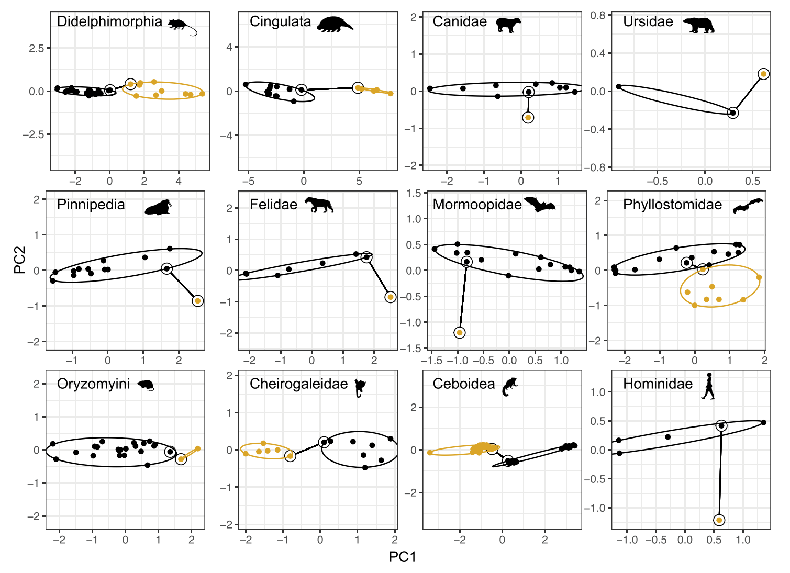

Publication ·
Our paper, “Invasion of new adaptive zones retains telltale signs of directional selection at macroevolutionary scales in mammals”, is now published in Evolution Letters!
Drawing on 11,793 specimens from 231 species and 43 museums worldwide, we asked whether major ecological transitions leave a lasting signature of directional selection in mammalian skull evolution. Most of the transitions we examined showed evolutionary rates above those expected from genetic drift, suggesting that signals of adaptation can persist across millions of years.
This paper represents a massive collective effort in specimen measurement, comparative analysis, and collaboration across institutions. A huge thank-you to our coauthors, museum curators, collection staff, and everyone who helped make it possible.

